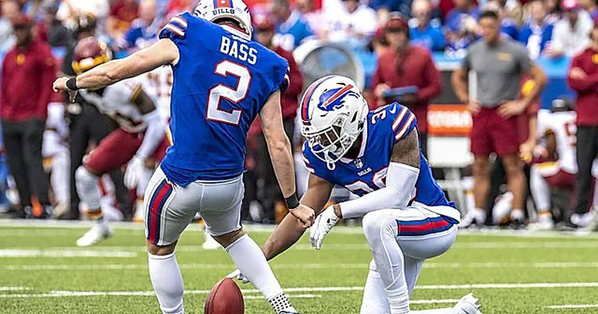

Bass boots 57-yard walk-off as Bills edge Chiefs
Tyler Bass drilled a 57-yard field goal as time expired to cap a rainy Thanksgiving night and lift Buffalo past Kansas City, 13-10.

Disclosure: this post contains affiliate links. I earn a commission on qualifying purchases.
Tyler Bass drilled a 57-yard field goal as time expired to give the Buffalo Bills a 13-10 win over the Kansas City Chiefs on Thanksgiving night, closing out the holiday tripleheader in heavy rain at Highmark Stadium in Orchard Park.
It was a kicker's night in miserable conditions — and Bass was the only one who looked comfortable in them.
How the final seconds played out
Kansas City went three-and-out from its own 11 with 15 seconds left and was forced to punt. Buffalo linebacker Joe Andreessen got a hand on Matt Araiza's punt, and Greg Dortch returned it 17 yards to the Chiefs' 39, where he was tackled with four seconds on the clock.
That was all the time Bass needed. He sent the kick through the uprights from 57 yards out as the clock hit zero, and the Bills improved to 10-1 — the first team in the NFL to reach 10 wins this season, and the leader in the race for the AFC's top seed.
The winner came about 12 minutes after Bass had already rescued Buffalo once, nailing a 54-yarder with 11:58 left in the fourth quarter to tie the game at 10. Both kicks were struck in the same direction, into the same wind and rain.
The contrast on the other sideline was stark. Harrison Butker missed a 46-yard attempt wide right earlier in the fourth quarter — his eighth missed field goal of the year — a kick that would have given Kansas City the lead with just under six minutes to go.
The weather was the story
Neither offense could find much rhythm all night. Heavy rain fell for most of the game, the temperature sat at 34 degrees at kickoff, and gusts reached 35 mph, making it feel like 23. Both quarterbacks struggled to complete passes in the second half, and Buffalo turned the ball over twice.
Patrick Mahomes finished 16-of-29 for 174 yards. The Chiefs' best work on the ground came from Emmett Johnson, who ran for 72 yards and a touchdown — his sixth score of the season — to give Kansas City a 9-7 lead in the third quarter.
Cook carried the offense
With the passing game grounded by the weather, James Cook was Buffalo's offense. He ran for 117 yards and scored the Bills' only touchdown, a 5-yard run that opened the scoring. It was his 11th touchdown of the season.
Final score: 13; 10
Record after the game: 10-1; 8-3
James Cook rushing: 117 yards, 1 TD; —
Patrick Mahomes passing: —; 16/29, 174 yards
Emmett Johnson rushing: —; 72 yards, 1 TD
What it means
The win extends Buffalo's run of regular-season success against Kansas City — five straight regular-season meetings — even as the Chiefs remain 4-0 against Josh Allen in the playoffs. More immediately, it gives the Bills separation at the top of the AFC with six weeks left, while Kansas City falls to 8-3 and loses ground in the conference race.
For the Chiefs, the loss was a special-teams failure more than anything else: a blocked punt on the penultimate play and a missed field goal in the fourth quarter, in a game their defense had kept within reach all night.
Sources
• Reuters: Tyler Bass boots last-second FG as Bills edge Chiefs in rainy showdown
• NBC Sports: Tyler Bass hits walk-off 57-yard field goal, Bills beat Chiefs 13-10
• theScore (AP): Bills edge Chiefs on dramatic FG after deflecting punt
• Sports Illustrated: Week 12 Good, Bad and Ugly
• Buffalo Bills: Full game highlights, Week 12
Gear up: Fanatics